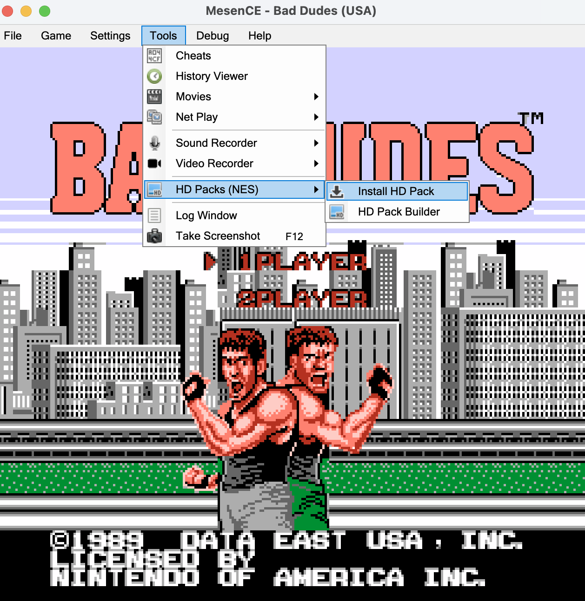
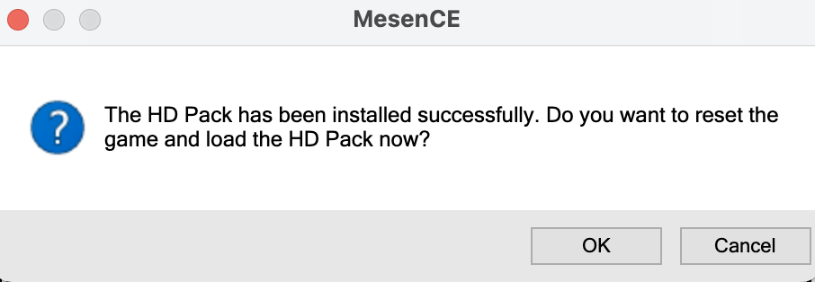
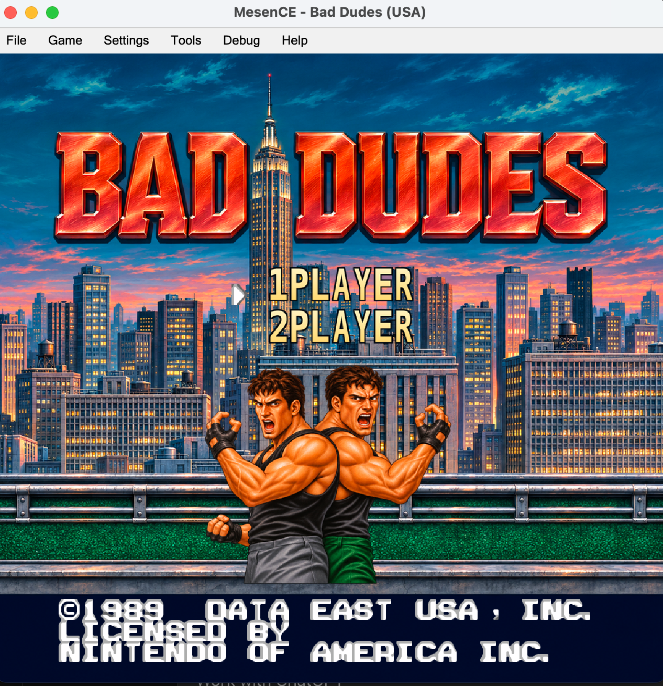

Bad Dudes HD
Take back the streets. Detailed heroes, enemies and environments across all seven stages.
Download v1.0.0 ↓CLASSIC GAMES. A NEW LOOK.
Your NES favorites, reimagined in HD. Explore a collection of free graphics packs built for standalone Mesen 2 / MesenCE.

CHOOSE YOUR NEXT REPLAY
A familiar adventure. A fresh set of pixels. Pick a game to get started.
Take back the streets. Detailed heroes, enemies and environments across all seven stages.
Download v1.0.0 ↓Return to the darkness. Reimagined characters, creatures and scenery through all six stages.
Download v1.0.1 ↓Head into deeper water. Painted coastlines, underwater encounters and a dramatic final breach.
Download v1.0.0 ↓Clear for takeoff. A detailed cockpit, painted skies and carrier scenes across four missions.
Download v1.0.0 ↓Downloads are hosted on GitHub. Choose the HD pack ZIP, rather than GitHub’s source-code archives.
FROM DOWNLOAD TO GAMEPLAY
Use the built-in installer in standalone MesenCE. Keep the HD-pack ZIP compressed.
Download the game’s HD-pack ZIP above, then open your own supported ROM in MesenCE.
Choose Tools > HD Packs (NES) > Install HD Pack, then select the downloaded ZIP.
Click OK when asked to reset the game and load the HD pack.
No manual extraction or folder renaming is needed for normal installation. To update, install the newer release ZIP through the same menu with your ROM open.



Use standalone MesenCE 2.2.1, the tested emulator for these packs. Download MesenCE. These packs use modern Mesen 2 / MesenCE HD-pack features; original Mesen 0.9.x and RetroArch’s legacy Mesen core are not compatible. That core supports pack format 106, while these projects use newer features. A separate MesenCE-based RetroArch core now exists, but these releases have not been validated with it. Standalone MesenCE is the supported setup described here.
In MesenCE, open Settings > Preferences > Files and check Data storage location. The HdPacks folder inside that location is authoritative; portable installations, redirected Documents folders and migrated Mesen2 setups can use another path.
| System | Default MesenCE HD pack folder |
|---|---|
| Windows | %USERPROFILE%\Documents\MesenCE\HdPacks\ |
| macOS | ~/Library/Application Support/MesenCE/HdPacks/ |
On Windows, paste the path into File Explorer’s address bar. On Mac, use Finder Go > Go to Folder… (Shift–Command–G). Older or migrated setups may instead use Documents\Mesen2\HdPacks on Windows, ~/Library/Application Support/Mesen2/HdPacks/ on Mac, or an older ~/.config/Mesen2/HdPacks/ location. Use the location shown in Preferences rather than creating folders in all of these places.
The folder inside HdPacks must match the ROM’s filename exactly, without .nes, including spaces, punctuation and capitalization. For example:
| ROM filename | Required pack file |
|---|---|
Bad Dudes (NES).nes |
HdPacks/Bad Dudes (NES)/hires.txt |
This is a naming example, not a different supported ROM version. Renaming a ROM does not change its contents or hash. The installer normally handles the folder name for the ROM you have open. If you rename the ROM later, reinstall the pack with that ROM open or rename its pack folder to match.
Make sure hires.txt is directly inside the ROM-named folder, alongside all the pack assets, with no extra nested pack folder. Keep the asset filenames unchanged. If an installation is incomplete, download the release ZIP again and reinstall it through the menu.
Hash the extracted .nes file itself, not the ROM ZIP or the HD-pack ZIP. Compare all 40 characters against the tested hash below; uppercase versus lowercase does not matter. A different hash means the file is not the exact tested ROM, even when its title or filename looks right. Compatibility with other dumps is not guaranteed. Do not try to fix a mismatch by renaming the file.
| Game / tested ROM | Full-file SHA-1 |
|---|---|
| Bad Dudes (USA) | 26E184E350F50BFA06038379A84F3B685B7509B8 |
| Holy Diver (translated) | FE2FCD0AD334D792DB16535D09F3AB9FB2BEA3AC |
| Jaws (USA) | C102DA80B2DED9364EBD707DF14CBC3BD40BD65A |
| Top Gun (USA) | A39376136CCCA0025063F3356B9EB41666AFF0BE |
Windows PowerShell (replace the example path with your ROM):
Get-FileHash -Algorithm SHA1 -LiteralPath "C:\path\to\Bad Dudes (NES).nes"
macOS Terminal:
shasum -a 1 "/path/to/Bad Dudes (NES).nes"
BEHIND THE COLLECTION
This is Goonie's collection of NES HD graphics projects: new artwork for familiar worlds, from the streets of Bad Dudes to the skies of Top Gun.
The packs replace graphics through the emulator. The original games still control movement, timing, collisions and audio.
Explore the projects on GitHub →GOOD TO KNOW
No. These downloads contain graphics packs. You’ll need your own supported ROM and a compatible emulator; neither is included.
See Troubleshooting for the HD-pack setting, Windows and macOS folders, exact folder naming and tested ROM SHA-1 hashes.
Open your ROM, choose Tools > HD Packs (NES) > Install HD Pack, select the newer release ZIP, and click OK to reset and load it.
Use the Issues tab in the game’s GitHub repository. Include the pack and emulator versions, your operating system, and a screenshot or recording showing the problem.